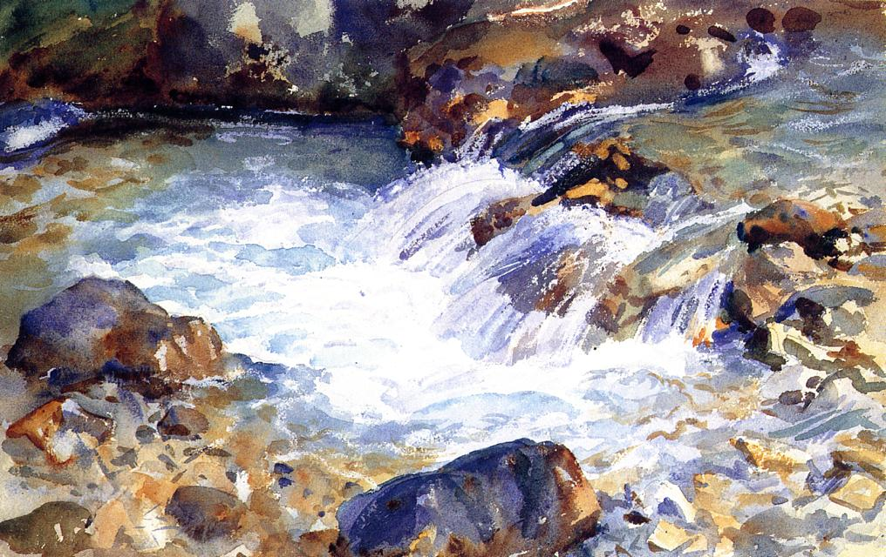

Pan jest poetą, prawda?
Do milczącej ziemi powiedz: płynę. Do śpieszącej wody powiedz: jestem…
Każdego dnia dokonujemy trafnych wyborów, choć nie zawsze zgodnych z naszymi pragnieniami. Marzymy o miriadach możliwości, które się przed nami otworzą, choć tak naprawdę przyszłość tkwi w miejscu, a jedynie my poruszamy się w nieskończonej przestrzeni…
Skąd mamy czerpać pewność, że nasze kroki zaprowadzą nas w upragnione miejsce? Skąd czerpać przekonanie, że podążamy przeznaczoną nam ścieżką? A może wszystko powinno wyglądać inaczej? Może kamyki z mozaiki naszego istnienia powinniśmy ułożyć w zupełnie odmienny wzór?
Podobne rozterki targały Rilkem, gdy z początkiem września roku 1896 powrócił do Pragi i rozpoczynał przygotowania do podróży w nieznane. W jego sercu — jak czytamy w biografii „Dźwięczące szkło” — wzbiera wówczas tęsknota za ucieczką, za uwolnieniem się z pęt, narzuconych mu przez nierozumiejącą go rodzinę, za możliwością potwierdzenia własnej wartości. Lecz jednocześnie odzywa się w nim miłość do ojca i opanowuje dręczące uczucie zwątpienia w samego siebie.
W na wskroś autobiograficznym utworze „Ewald Tragy” kreśli Rilke wymowną scenę. Oto Ewald zwierza się cicho guwernantce, która jako jedyna pragnie się dowiedzieć, czemu wyjeżdża, chociaż wcale nie musi. „Pan jest poetą, prawda?” — zapytuje.
Właśnie o to chodzi, Fräulein, że sam nie wiem. A kiedyś wreszcie trzeba się tego dowiedzieć, prawda? Tak czy owak. Tu w żaden sposób tej sprawy nie wyjaśnię. Nie można uciec od siebie, brak tu spokoju, brak przestrzeni, perspektywy. Rozumie pani teraz, że nigdy nic ojcu nie pokazuję — w ogóle nikomu tutaj; bo tu nie oceniają moich prób, tylko mnie w nich nienawidzą. A ja sam mam tyle wątpliwości. Doprawdy: całe noce leżę bezsennie, ze złożonymi rękami, i dręczę się: Czy jestem godzien?
Do tego tematu powraca Rilke pod koniec życia na kartach swego „Testamentu”, zadziwiającego świadectwa zmagań poety z własnym losem. Rozumie już, że czas próby dla artysty — dodajmy: dla każdej artystycznej duszy — nie przychodzi w chwilach spełnienia, objawienia geniuszu, lecz „pomiędzy nimi, kiedy zwyczajne życie rozprasza myśli, a powszednia miłość skrywa pokusę”.
Fragment „Ewalda Tragy” Rilkego w przekładzie W. Wirpszy.